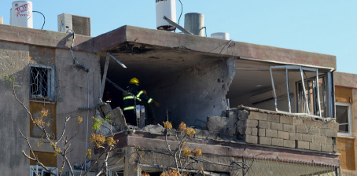

A letter from Mira, following the massacre in Bombay
A heartfelt, pain-filled letter to her best friend, Mira Scharf, may Hashem avenge her blood.

My dear Mira,
I’m sorry. I never dreamed I would be writing to you in such a way. With your shy smile you are probably whispering to me, “Esti, it’s not necessary, really …” But what can I do? I did not choose this. The One and only One, Master of the world Himself, is the One who chose. It is beyond our comprehension. By now, many have heard of your nobility as a righteous woman, about your devotion as a Jewish mother, your loyalty as a Chassid, and about your dedication to the shlichus of the Rebbe.
Mira, my childhood friend. I was always proud of you. You were so special. I had the privilege of being close to you, of basking in your glow, of learning from you. What a delightful combination of wisdom, tznius, seriousness, simcha, refinement, and above all – truth. You always knew how to say it, to attain it, and to live it, uncompromisingly. You did not look for the easy way out.
I wholeheartedly thank Hashem who connected us. It wasn’t a given; it was a gift. As a rule, you always took an interest in what was happening with me and I know that now too, it is important to you that you know how I am. So I decided to sit down and write you a letter in which I will share what is in my mind and heart.
What can I tell you? The pain is unbearable. I don’t stop crying. I cannot digest this tragedy. I miss you so badly. I want to talk to you, to see you, to hear you. Come and tell me how you feel, what you experienced after hearing the siren and … oy, Mira.
I can’t stop thinking about you. I recall all kinds of things we went through together. I can hear you talking to me, advising me, laughing with me, and even crying with me. I just can’t believe this. I am sure it’s a horrible dream, a dream which I will immediately discover is just a nightmare.
I remember the day we met, many years ago. We sat together in class in the enormous building of Beis Yaakov HaYashan. Yes, it was there that my soul connected with your special soul. What took place since the day we met, no pen can describe.
Who would have imagined that a Chassidishe girl, who grew up in a beautiful Sadigura Chassidic home, who previously had attended Yiddish-speaking schools, would transfer to a Chabad high school, become a loyal soldier in the Rebbe’s army, marry a Lubavitcher bachur, and go with him to distant India, open a Chabad house in New Delhi, one of the filthiest places on earth, and raise her children there!
This is how it began. I grew up as a Lubavitcher but I attended Beis Yaakov schools. Whenever I asked my parents why Beis Yaakov and not Beis Chana, they told me that wherever you go you need to be a shliach. “You are the Rebbe’s shlucha in Beis Yaakov.” I took them at their word but amongst my classmates I never saw a particular love for Chabad, certainly not any interest in what it’s truly about. Aside from arguments or, in extreme instances, disparagement, nobody expressed any real interest.
Then we became friends. I soon discovered that our conversations and your questions about Chabad and the belief in the Rebbe as Moshiach were not meant to “start up” with me, but were coming from an honest desire to learn and know, because this is what you felt your neshama desired.
I must say that your thirst to know, and it was apparent that you were asking out of a desire to know the truth, had a deep effect on me. Thanks to you, my hiskashrus to the Rebbe became ten times stronger. I felt like I had to learn sichos and maamarim in depth. I saw how the Rebbe was choosing you as one of his own. As much as you think your life changed since we became acquainted – my life changed much more.
When I transferred to a Chabad school after an answer from the Rebbe in the Igros Kodesh, you greatly desired transferring along with me. However, you confided that you did not want to make this move against your parents’ wishes. With your sensitivity, you knew they wouldn’t be thrilled with the idea, but with faith in the Rebbe, you had no doubt that your time would come.
When you saw that the time was right, you decided to ask your father for permission to switch to Beis Chana. You wrote him a letter in which you explained your desire to change to a Chabad institution. It wasn’t because of the matriculation they offered or because you thought that socially, it would be more open-minded. You simply yearned to connect with the Rebbe and with a Chabad Chassidic way of life.
After much hesitation, but understanding that you were motivated by spiritual reasons, your father gave his consent. That is how you found yourself on the bus from Ramot to Rechov Shimon HaTzaddik, traveling to the Chabad school. In your quiet way you joined the chevra. With time, your hiskashrus to the Rebbe became even stronger and along with the good middos, refinement, and tznius that you acquired in Beis Yaakov, you became an outstanding role model for all the girls in the school.
You did not have enough money to travel to the Rebbe for Tishrei, but the Rebbe chose you and took care of you. There was a raffle in school for 22 Shevat and you won! That’s when I felt that the Rebbe wanted you to come to visit him and he was inviting you for the first time with a smile. What an eruption of joy there was with all the girls lifting you on a chair. We were all happy for you. We all felt you deserved it. That was actually your Chassidishe birthday, Mira.
When it was time to look for a shidduch, some people were nervous for you, but you deserved a Chassidishe bachur, mekushar to the Rebbe. Your bitachon was borne out when our family had the z’chus to be the shluchim and you became engaged to Shmulik. What a simcha that was! When it came to preparations for the wedding, the gashmius was not your priority. You focused your attention on the sichos and letters of the Rebbe. That is what you considered proper preparation for starting a new, Jewish home.
Over the years, you would come to my house because you wanted to see what a Lubavitcher home was like. You visited my parents’ house so often that we felt like sisters. My parents welcomed you and showered you with love as though you were their daughter, and were proud that I had a friend like you. You became an inseparable part of my life.
When I looked through our correspondence this week, I found an email that you sent me after not hearing from me for a while: “Esti, I’m a bit worried about you since I haven’t heard from you in so long. I hope all is well and that we connect soon.”
Now too, I know that you are worried and that next to the holy Imahos you stand and plead for the Geula. For you know how truly good it is and therefore, you want it for us too. That is how you lived your life, with honesty and integrity. You were never two-faced. You said what you thought and you always thought positively. You always looked at another Jew with a “good eye.” You always judged favorably. You are not one of those about whom they say, “Acharei Mos K’doshim,” because you were really this way, a true Chassidiste of the Rebbe who did everything with truth.
It’s unbelievable how life went so fast. Your transformation in Beis Yaakov and then, three months after your wedding, you were on shlichus in a foreign, third world country. This was done with utter bittul to the Rebbe in order to help women who had not been exposed to Chassidus. You did your work modestly and with genuine Ahavas Yisroel because you cared about helping another Jew attain the truth which you attained with such effort.
G-d’s ways are hidden from us. He chose to take you in your youth in a horrifying tragedy. Now, your noble image has been seen by the public. Your greatness is shining for all to see, for those who had no idea and for those who knew, but not enough. You are no longer just my Mira, but everyone’s Mira. A lofty neshama that managed, in its short life, to accomplish so much.
The heart does not accept this and will not accept this frightening reality. I am sure you are not pleased that we are crying over you, but you would do the same. In these difficult moments, we promise to increase the light because that is the only way we will prevail over this galus. Jewish women and girls heard and learned about your tznius, yiras Shamayim, your doing for others and your trait of truth, which so personified you, because you were a model of genuine yiras Hashem.
In Chassidus we learn that before the great light will shine through with the revelation of Moshiach, the darkness in the world will increase. I turn to You, compassionate G-d, Father in heaven, with fear and trembling. Please tell me: Was the thick, black, ugly cloud that hovered over the skies of Nachalat Har Chabad on Rosh Chodesh Kislev 5773 not black enough?
And Mira, as you wrote me in one of your many emails, now I will ask you – please send me a sign of life, okay?
Esti
A letter from Mira, following the massacre in Bombay
Yechi HaMelech!
Dear Oran,
How are you? How do you feel? How’s work?
You are surely shocked, as we all are, following the tragedy in Bombay. We attached a letter that the shlucha in Poona, Rochel’le wrote, which reflects how we all feel.
We decided, because of what happened now, that we are continuing on a larger scale! We are breaking through, forward. Now! What the cursed terrorists wanted to stop, we must continue. We must show them that we cannot be vanquished.
You, who stayed with us, know how important it is to have a Chabad house, a warm home in the middle of nowhere … Shabbos meals, Jewish holidays, shiurim … You know that we must continue and grow for all, so that anyone who comes can receive whatever he or she needs, with all our heart, in the Rebbe’s home, in Moshiach’s home.
We are returning in another two weeks, G-d willing, with a new shliach to Delhi, our dear son Yosef Yitzchok, and we want to upgrade the Chabad house, to move to a beautiful, new building, to open a restaurant, to build a mikva, and for this a lot of money is needed. The costs are enormous! But if everyone gives a little, it will accumulate and we can do it!
So we are relying on you to do all that you can for the goal, for the Chabad house of Delhi. Enlist all your friends and family so that each person can give what he can and together, we will take a big, Jewish revenge!
We will not be vanquished. Hashem is with us and we are continuing onward with joy and faith, straight towards the Geula.
We wish you all the best in the world and may we speedily meet at the Beis HaMikdash with all of the Jewish people.
Best wishes and Shabbat Shalom,
Shmulik and Mira Scharf
Beis Moshiach. "A letter from Mira, following the massacre in Bombay." Beis Moshiach, no. 859 (December 6, 2012).